青岛国际啤酒节始创于1991年，在每年8月的第二个周末开幕，为期16天。节日由国家有关部委和青岛市人民政府共同主办，是融旅游、文化、体育、经贸于一体的国家级节庆活动。
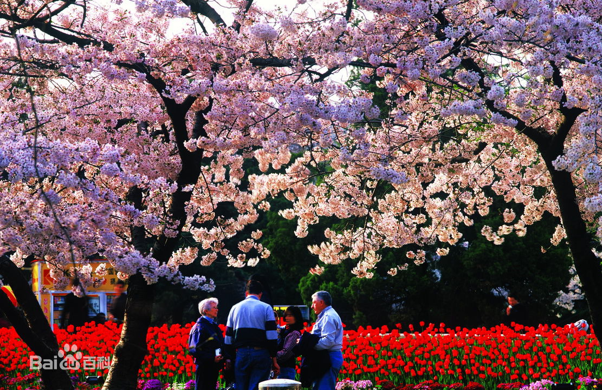
青岛樱花会已有80余年的历史，每年4、5月间在中山公园举行，20世纪30年代，中山公园的赏樱活动已有盛名，"东海花海"被列为青岛市十景之一。
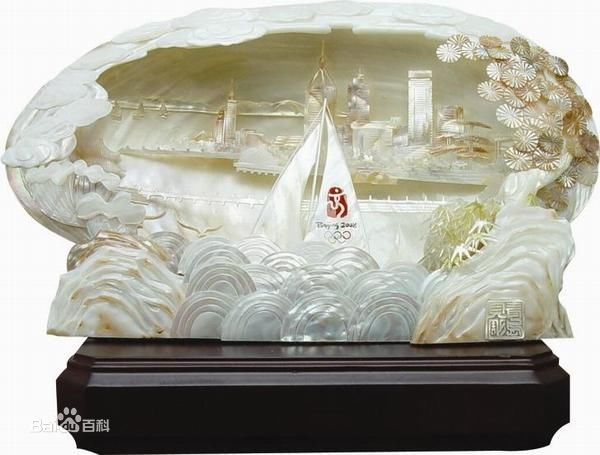
青岛贝雕是一种以中国传统工艺为表现手法，是以珍稀螺壳为原料，利用其天然色泽和纹理形状，雕琢成平贴、半浮雕、镶嵌、立体等多种形式和规格的工艺产品。
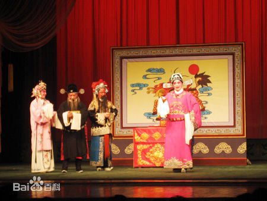
即墨柳腔是山东青岛市独有的一个比较古老的戏曲剧种。它始于清朝乾隆年间，是从山东境内广泛流传的“本肘鼓”的基础上演变而来的，源于即墨西部的沽河流域，流传于胶东地区，距今已有200多年的历史。
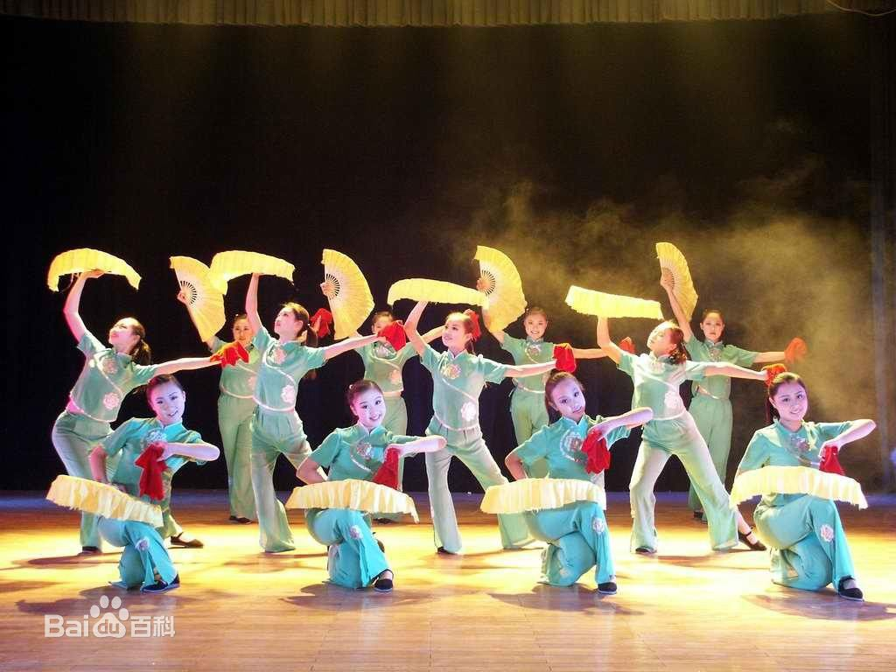
胶州秧歌又称地秧歌、跑秧歌，当地民间称扭断腰、三道弯，是山东省的传统民俗舞蹈之一，属于三大秧歌之一。
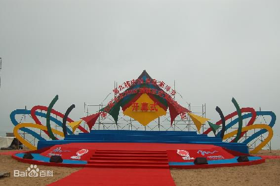
中国青岛海洋节作为青岛市的重要节庆品牌，是中国唯一以海洋为主题的节日，创始于1999年，举办时间定在每年的7月。
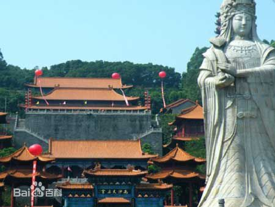
天后宫庙会俗称青岛大庙庙会，是集祭祀、歌舞、文娱、商贸于一体的汉族传统民俗活动。
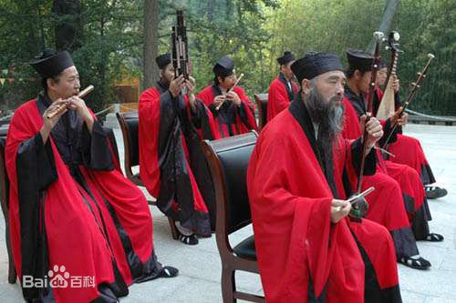
道教音乐是中国民间音乐的重要组成部分。崂山是中华道教胜地。崂山道乐经曲，多由上古时代民歌和民间号子演变而成，具有东夷文化气息。后来，风行全国的“十方经韵”传入，融入了崂山道乐。
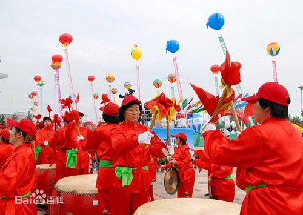
胶东大鼓是产生于胶东半岛沿海各县的一种民间曲艺形式，迄今已有260余年的历史。它起源于盲人调，广泛流传于胶东半岛，具有浓厚的地方特色和淳朴的乡土气息，深受当地群众的喜爱。
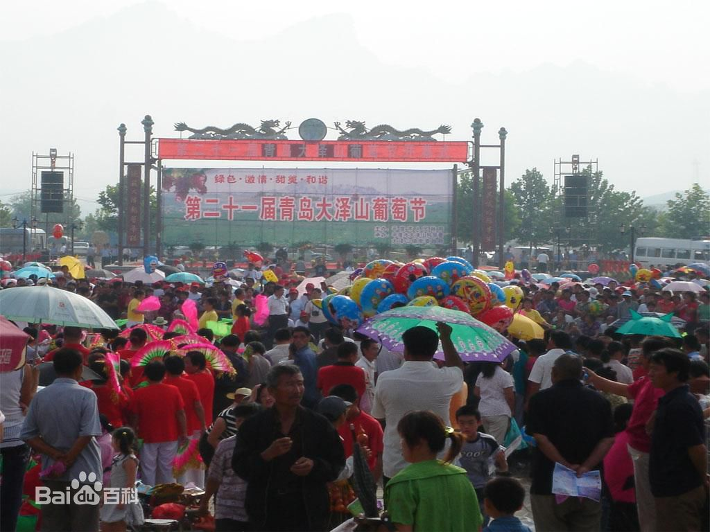
大泽山葡萄节原为平度市大泽山区独有的民间传统节日－－“财神节”（农历七月二十二日），相传源于唐朝初年。
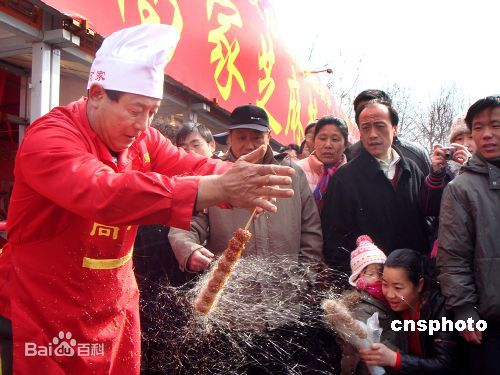
出于保护民间传统文化的目的，1990年起政府定名“海云庵糖球会”，会期延长为三天。近20年来，海云庵糖球会成为远近闻名的大型民俗庙会，赶会的摊贩许多来自外地外省，因而2005年被评为“中国十大民俗节会”之一。
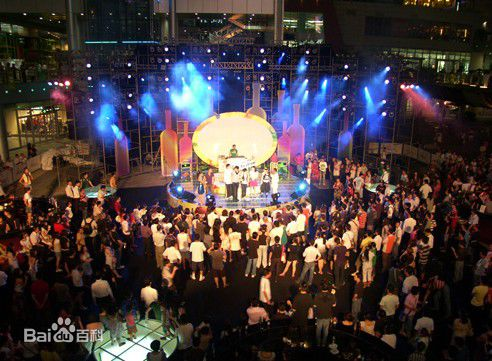
青岛酒吧文化节由青岛市旅游局主办。主要有主题酒吧活动、名人鸡尾酒会、摄影大赛、调酒大赛等活动。
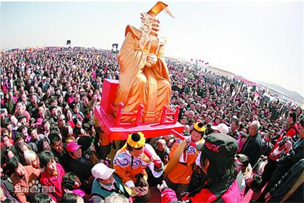
田横祭海节主要是渔民过的节日，发源于山东省田横镇周戈庄村的地方传统民俗活动。具有500多年历史。经当地政府的精心策划、包装和推介，这个古老的节日已发展成为山东乃至全国知名的民俗节庆品牌，更是现代人心驰神往的狂欢大典，每年都吸引不计其数的中外游客及中国各地的民俗、经济政策研究等方面的专家慕名前来。
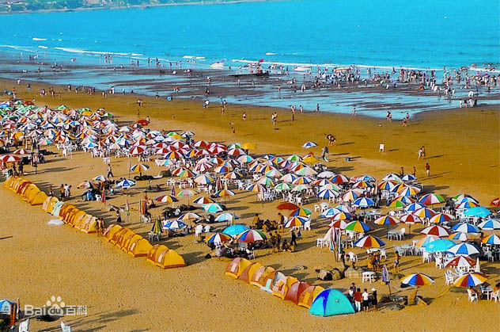
“中国·青岛金沙滩文化旅游节”由青岛经济技术开发区管理委员会、黄岛区人民政府主办，自1998年开始每年7-8月份举办一次。
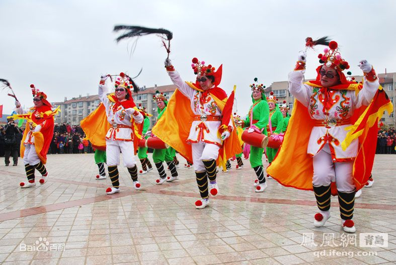
青岛是一个现代化的城市，但也在向世界展示着地方民俗特色文化。地方民俗勾勒并凸显了青岛一地文化中的城市特色，而青岛能够为世界留下深刻记忆的，也正是囊括了民间传统文化在内的城市特色人文风貌。能够反映青岛一地人文风貌的，远不止于五花八门的传统民间工艺与民间小吃，还有近百年来青岛民间居住形式的里院建筑；具有浓郁地方特色的戏剧茂腔、柳腔；以妈祖为代表的沿海民间民俗信仰及各种民族文化节等。
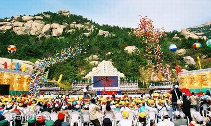
崂山旅游文化节以“山海情怀、魅力崂山”为主题。分为节会活动、论坛及研讨会、文化系列活动、旅游系列活动、经贸系列活动、体育健身系列活动等八大主题板块。
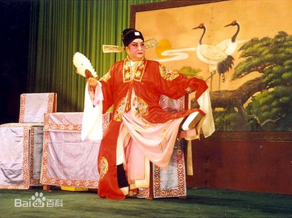
茂腔是流行于潍坊、青岛、日照等地的地方戏曲，最初为民间哼唱的小调，称为“周姑调”，传说系因一周姓尼姑演唱而得名，又称“肘子鼓”。
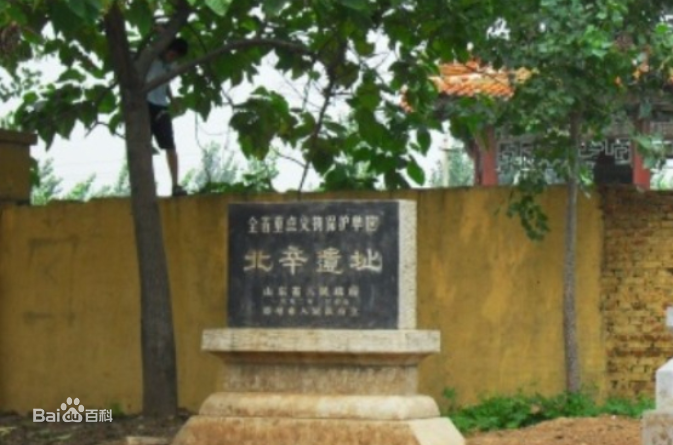
北辛文化是黄河下游一种原始社会较早期的文化遗址，环鲁中南山地周围的兖州、曲阜、泰安、平阴、长清、济南、章丘、邹平、汶上、张店、青州、莒县、临沭、兰陵和滕州等地，都发现了距今七八千年的新石器时代早期遗存。
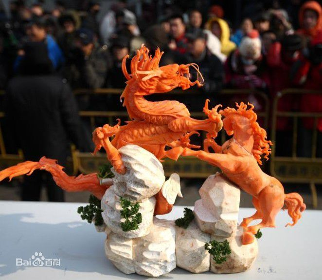
青岛萝卜会是历史悠久的民俗活动，也叫清溪庵庙会， 清溪庵俗称下村庙，位于现今的山东青岛台东道口路，始建于元代，属道教庙宇，原称玉皇庙。庙内供奉玉皇大帝、太上老君、关帝圣君神像，归崂山太清宫管辖。建庙时，因庙前有清清的河水流过而得名。
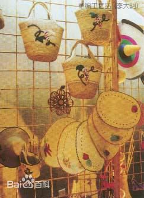
青岛草编是山东省青岛市的地方传统手工艺品，以多种植物纤维为原料，生产工艺品和日用品。草编品种有花样辫、手编提篮、草帽、茶杯垫、坐垫、门帘、草地毯等十几种、数百个品种。
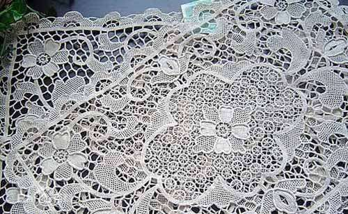
即墨花边，鲁绣的一种。又称即墨镶边大套，是具有近百年历史的手工艺品。主要原料是优质亚麻布和特制丝光线，色泽以米黄、漂白为主。
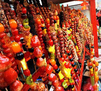
糖球会，即青岛海云庵庙会，是青岛市最大的民俗节会之一。 海云庵糖球会每年正月十六在青岛市市北区海云庵广场召开，为期七天，参会市民最多可达近一百多万人次。
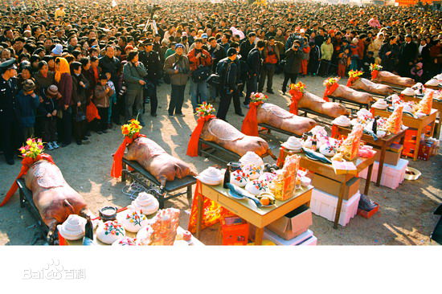
周戈庄上网节是山东青岛地方民间节日之一，属于渔民的节日。已有500余年的发展历史。起初，面对浩瀚的大海，渔民们显得无能为力，只能祈求幻化中海神的保佑，逐渐形成了对海神的崇信和祭海民俗文化。
 胡帅博
胡帅博